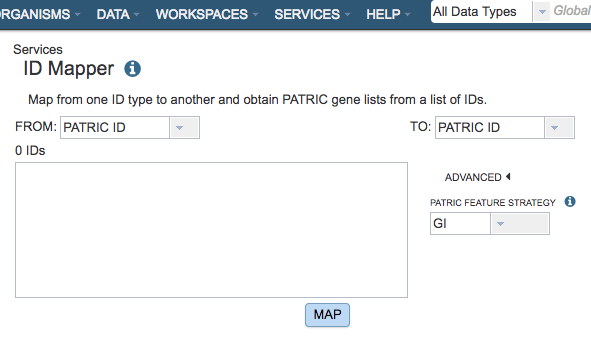
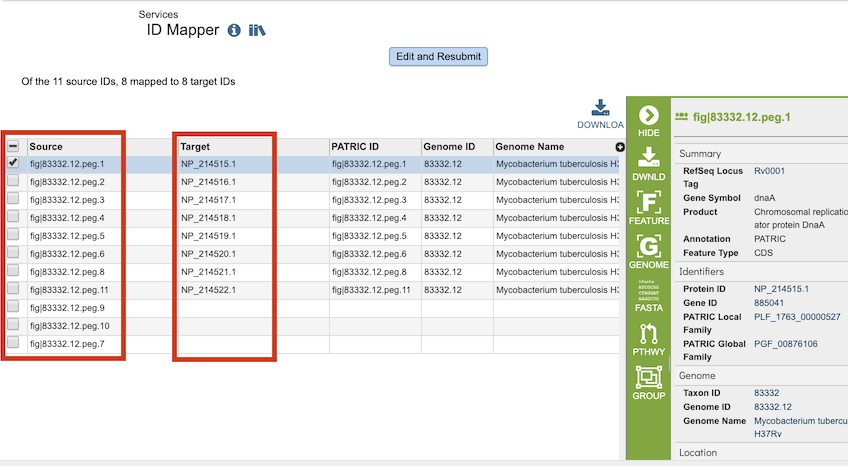

ID Mapper Tool¶
Revised: February 22, 2024
Overview¶
The ID Mapper tool maps BV-BRC identifiers to those from other prominent external databases such as GenBank, RefSeq, EMBL, UniProt, KEGG, etc. Alternatively, it can map a list of external database identifiers to the corresponding BV-BRC features.
See also¶
ID Mapping Sources¶
First, BV-BRC CDSs (protein coding genes) are mapped to corresponding CDSs in RefSeq/GenBank by matching their stop position on genome sequences.
Second, RefSeq/GenBank CDSs are mapped to corresponding UniProtKB Accession.
Third, mappings are extended to other prominent external database identifiers using UniProt’s ID Mapping Service.
BV-BRC <-> RefSeq/GenBank <-> UniProtKB Accession <-> Other External Databases
Using the ID Mapper Tool¶
The ID Mapper submenu option under the Services main menu (Data category) opens the ID Mapper input form (shown below). Note: You must be logged into BV-BRC to use this tool.

Options¶

From¶
Dropdown list for electing which ID type (BV-BRC, RefSeq, Uniprot-KB, etc.) to map from (source).
To¶
Dropdown list for selecting which ID type (BV-BRC, RefSeq, Uniprot-KB, etc.) to map to (target).
IDs¶
Input box for specifying the IDs to map. The IDs can be specified in a comma-separated or one-per-line list.
Feature Strategy¶
This tool uses the Uniprot-KB mapping table to map external IDs to BV-BRC. This is done using NCBI IDs. Due to updates over time some NCBI IDs may achieve better mapping results than others.
Output Results¶

The ID Mapper Service generates a table containing all the matching items (e.g., features, genomes, etc.) that map to the list of IDs provided. The input IDs appear in the Source column and matching IDs in the Target column. Every feature may not have a matching ID in the target ID type.